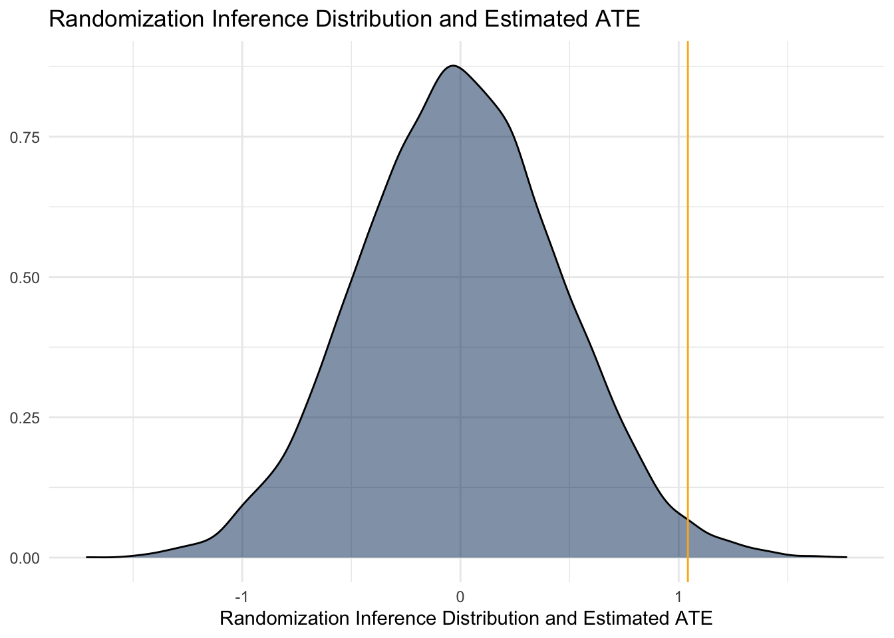

3.5 Applying Randomization Inference
3.5.1 Make Data
set.seed(1)
d <- data.table(
id = 1:100,
D = rep(0:1, each = 50),
Y = c(rnorm(n=50, mean=0, sd=2.5), rnorm(n=50, mean=1, sd=2.5))
)3.5.2 Plot Data
In the following plot, are you able to assess whether there is a treatment effect simply by looking at the distributions?
ggplot(d) +
aes(x=Y, fill=as.factor(D)) +
geom_density(alpha=0.5) +
labs(
x = 'Distribution of outcomes',
y = NULL,
title = 'Distribution of outcomes, by treatment',
fill = 'Treatment\nAssignment') +
scale_fill_manual(
values = c('#003262', '#FDB515')
)
3.5.3 Classic Test
If you were to write a classic test against this data, given what you know about how it was generated, what would be the classic test? What do you learn from this test, and what is the interpretation?
d[ , t.test(Y ~ D)]##
## Welch Two Sample t-test
##
## data: Y by D
## t = -2.309, df = 95.793, p-value = 0.02309
## alternative hypothesis: true difference in means between group 0 and group 1 is not equal to 0
## 95 percent confidence interval:
## -1.9381728 -0.1462181
## sample estimates:
## mean in group 0 mean in group 1
## 0.2511207 1.29331613.5.4 Randomization Inference Test
Now, instead suppose that you were to conduct the randomization inference. What are the steps to the algorithm for producing a result using randomization?
- State the null hypothesis
- Compute the statistic of interest using the observed data
- Fill in data, under the statement of the null hypothesis
- Permute the treatment assignment labels to generate a new sample of the treatment assignment vector, and then estimate the statistic of interest
- Repeat the permutation and estimation (step 4) process repeatedly to sample from the randomization inference distribution of the statistic
- Examine randomization inference distribution
## 1. The sharp null is that tau = 0
## 2. Compute the statistic of interest
true_ate <- d[ , .(group_mean = mean(Y)), keyby = .(D)][ , group_mean[D==1] - group_mean[D==0]]
## 3, 4, 5. Permute the treatment assignment labels and repeatedly compute the statistic of interest
ri_distribution <- replicate(
n=10000,
expr = d[ , .(group_mean = mean(Y)), keyby = .(ri_treatment = sample(D))][ ,
group_mean[ri_treatment==1] - group_mean[ri_treatment==0]]
)
# 6. Examine distribution
ggplot() +
geom_density(aes(x=ri_distribution), fill = '#003262', alpha = 0.5) +
geom_vline(xintercept = true_ate, color = '#FDB515') +
labs(
x = 'Randomization Inference Distribution and Estimated ATE',
y = NULL,
title = 'Randomization Inference Distribution and Estimated ATE')
How much of the randomization inference is more extreme than the treatment effect?
ri_p_value <- mean(abs(ri_distribution) > abs(true_ate))
ri_p_value## [1] 0.0226Notice that 0.023 of the randomization inference distribution is more extreme than the observed treatment effect. How does this compare to the t-test p-value that we calculated above?